Четвертый день ВелоХануки.
Проснулись в 4, быстро поели, собрались и выехали еще до рассвета. Дядя Вова, респект ему с уважухой, встал вместе с нами и вызвался проводить до выезда из города. Быстренько проскочили несколько километров, проехали мимо страшного забора поселения арабских беженцев.
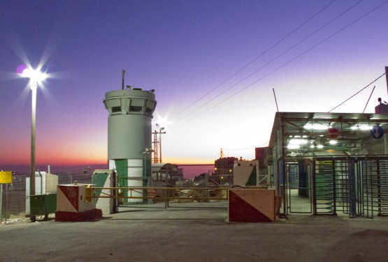
Начался спуск и только за поворотом я понял, что спуск этот продолжится еще не один километр и, что Дядя Вова явно останется наверху. Вот так получилось, что я даже не попрощался с таким хорошим человеком. Андрей, правда сказал, что он сделал это за меня, но все равно не удобно. Дядя Вова не серчай, я не со зла, спасибо тебе огромное.
Комментарий Андрея
Дядя Вова живет в достойном месте. Маршрут начинаешь, сваливаясь в течении зо минут на скорости за 50 км/ч. Если уходишь на восходе, то красив восход солнца на Иорданскими горами. Саня улетел, а мы с Дядей Вовой ещё немножко побратались.
Целью этого дня было доехать до Монастыря св. Георгия Хозевита (Сент Джордж) затем спуститься по 1 трассе до заправки около кибуца Альмог и снова подняться на максимальную высоту, но уже в направлении следующего монастыря Мар Саба. Этот и два последующих дня мы находились на палестинских территориях. Существуют разные мнения о степени опасности этих мест, но с палаткой где попало, я бы там не рекомендовал вставать, особенно вблизи Иерихона.
Предстояло проверить, как страшен на самом деле трек, проложенный по синглам (тропинкам), который местные ребята называют трудным. Перед загрузкой в GPS я сократил треки до 40-50 метров между точками, в наших равнинных местах этого вполне хватает, но, как выяснилось, в горах нужно оставлять хотя бы 30 метров между точками, иначе затупы неизбежны. Первый раз мы затупили при съезде с шоссе на грунт, нужно было ехать по тропинке, идущей по вершине холма, а мы бодро спустились на грунтовку, идущую параллельно, но по дну ущелья.
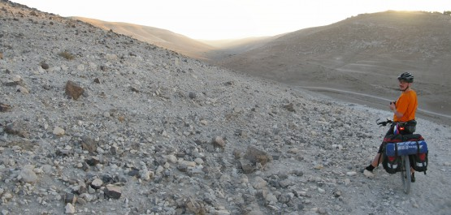
Уперлись в бедуинское поселение, пообщались с местным пацаном на ослике и потеряли немного драгоценного утреннего прохладного времени. Пока вылезали обратно наверх, увидели местных велосипедистов, бодро едущих по вершине холма, позавидовали и потащили свои груженые байки вверх.
Немного не доходя вершины у Андрея камень вывернулся из-под ноги и он расцарапал себе ногу, первый раз за этот день. Обработал ему рану перекисью и зеленкой, покатили по велосипедным следам дальше. Начались панорамные виды, которые будут сопровождать нас все ближайшие 4 дня.
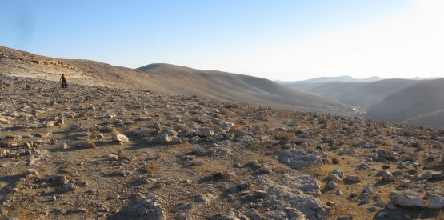
Да, ради таких видов стоит тащить велик на горбу в гору. Через некоторое время, на очередном затупе, нас обогнала еще одна небольшая группа байкеров. Похоже, маршрут пользуется популярностью. Неожиданно встретили напоминание о далеко не мирной истории этих мест. Невольно возникла мысль: Почему люди тысячелетиями воюют за эти сухие и безжизненные горы?
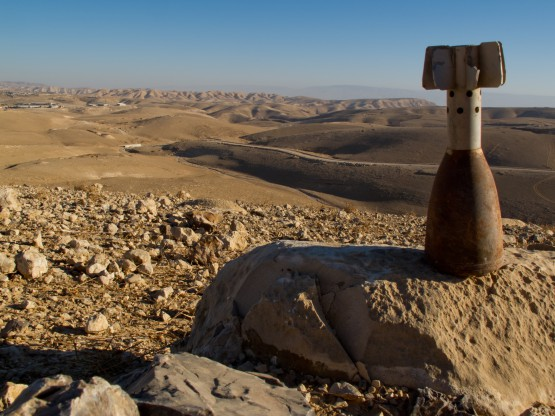
Долго размышлять не дали бедуинские детишки, которые поджидали нас в начале длинного тягуна. Тактика у них, похоже, была отработана на 5 баллов. Так как мы не могли оторваться на относительно крутом подъеме, то все 300 метров, они бежали и кричали монотонно что-то типа джа-джа-джа. . . Монотонность напоминала работу дятла. Судя по интонации это можно было перевести как Дай-дай-дай, денег дай. Иногда джа сопровождалось ударами себя по животу, типа кушать дай. Интонация и мимика отработаны отлично, в театральный поступили бы вне конкурса. Совет, что не надо кормить бедуинских детей, иначе не отстанут, мы помнили хорошо. Отстали они, как только мы свернули на боковую дорожку.
Буквально через 500 метров случилась неприятность, Андрей пробил заднее колесо об острый камень. Его низкопрофильная резина явно не дружила с острыми камнями и глубокими канавами, которые обычно сопровождали каждый спуск. Только Андрей разложился и собрался клеить камеру, появились другие бедуинские дети, как чертики из табакерки. Покрутились и заладили свое джа.
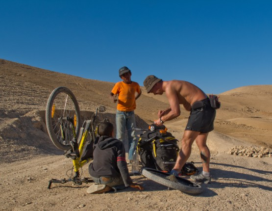
Ситуация усугублялась тем, что у Андрея был распакован рюкзак и мы опасались как бы чего не стырили. Пришлось вступить с ними в диалог, они по-бедуински, я по-русски, через какое-то время мы уже прекрасно друг друга понимали. Мелкому пацану очень понравился мой фонарик P7, а старший просил то денег, то еды, правда через некоторое время он понял, что ни то, ни другое не обломится и ситуация стала его забавлять не меньше моего. Еще через 5 минут мы уже откровенно ржали друг над другом.
Комментарий Андрея
Вообще то было прикольно, но жарко, думаю уже за +25С. Пот скатывался и накрывал глаза. Отвлекало. Но с палестинской ребятнёй было прикольно. - Джа-джа-джа!!!, рука тянется к велокомпьютеру- Иди на х…!!! ХА-ХА-ХА!!! Вместе. Наношу клей на заплатки. Пот в глаза. Джа-джа-джа!!! Тянется к питьевой бутылке. Дай пить! И тут же клянчит несколько заплаток… Короче было весело. Основная мысль: всё ли у нас под визуальным контролем.
Мимо проехали два взрослых бедуина и судя по тону сделали пацанам внушение, мол, отстаньте от туристов. На что младший пацан быстро слился, а старший вступил в пререкания - никакого уважения к старшим. Факт, что взрослые бедуины далеко не одобряют эти детские приставания к туристам был для меня открытием. Кроме того порадовала открытая улыбка, с которой они нас приветствовали.
Взрослые уехали, мелкий вернулся к моему фонарю, а через некоторое время появился третий пацан, малость постарше и верхом на осле. Становилось жарче  Андрей все клеил свою камеру и в какой-то момент я уже начал переживать, что добром все это не закончится. Но старший пацан оказался адекватнее мелких, когда он увидел что мелкий трогает руками мой фонарь - сделал ему замечание, мол проси сколько хочешь, но руками не трогай, и младший послушался. Вот ведь и у них конфликт поколений, старших не слушают, а сверстников запросто. Из всей этой истории у меня осталось наблюдение, что чем старше бедуины, тем адекватнее они себя ведут. Без претензий на истину, просто наблюдение.
Андрей все клеил свою камеру и в какой-то момент я уже начал переживать, что добром все это не закончится. Но старший пацан оказался адекватнее мелких, когда он увидел что мелкий трогает руками мой фонарь - сделал ему замечание, мол проси сколько хочешь, но руками не трогай, и младший послушался. Вот ведь и у них конфликт поколений, старших не слушают, а сверстников запросто. Из всей этой истории у меня осталось наблюдение, что чем старше бедуины, тем адекватнее они себя ведут. Без претензий на истину, просто наблюдение.
Андрей закончил с колесом и мы поехали, душевно распрощавшись с шумными детишками. Сфотографировать они себя, кстати, так и не дали. Преодолев несколько крутых спусков и подъемов, выехали на вершину с отличным видом на многие километры. Неожиданно из-за камня поднялся бедуин и начал звать нас к себе. Мы с некой опаской отказались, но он был настойчив, а слово чай оказалось решающим. Как выяснилось, на пригорке сидели-лежали три бедуина и попивали чаек из закопченного чайника.
Андрей на всякий случай уточнил ничего мол, что мы в шортах. Ничего страшного, махнул рукой тот, что позвал нас на чай. Присели. Зазывавший нас разговаривал по-английски. Поговорили про Россию, про дубак, посмотрели наши фотки с заснеженным Пулково, выпили по 2 стакана чая. Это настоящий бедуинский чай - пояснили нам, мы прониклись. Чай действительно вкусный, по аромату похож на турецкий, но больше сахара. К чаю полагалась лепешка, типа лаваша, но пропитанная маслом и от этого вкуснее и соленые, слегка вяленные оливки - вкуснятина. Вот ведь опять встретили хороших людей, а все так пугают бедуинами.
Не успели мы допить второй стакан чая как на тропе появилась группа байкеров, по меньшей мере человек 20, увидели наши байки и через 5 минут бедуины уже были в толпе велосипедистов. Вроде как они сильно не расстроились, даже согласились с нами сфотографироваться, но на всякий случай быстро собрались и ушли.
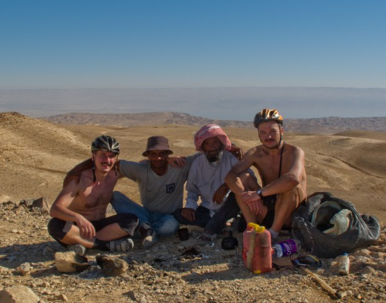
Среди велосипедистов только один говорил по-русски, странно, правда?)) Группа оказалась сборной солянкой со всего Израиля. Оказывается они очень долго ждали пока станет холодно, чтобы проехать именно этот маршрут (маршрут действительно того стоит). При слове холодно мы с Андреем поржали про себя, так как температура неуклонно приближалась к 30.
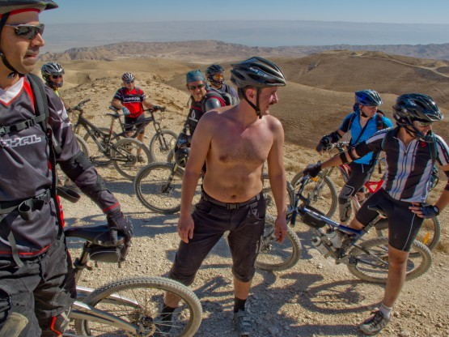
Поговорили и в путь, движение в колонне велосипедистов очень напомнило ВелоПитерскую покатушку, хвост начинает со старта растягиваться на километры Попытались пропустить толпу вперед по тропе, но хвост ехал слишком медленно. В итоге я пристроился за головной группой, а Андрей остался в хвостовой. К следующей остановке он приехал изрядно поцарапанным. Объяснил, что девушка перед ним резко оттормозилась, пришлось падать. Зря он, конечно, девушки они мягкие, всяко мягче камней, надо было не сворачивать
Снова достал аптечку, перекись, зеленку. Хорошая получилась боевая раскраска, настоящая. Пока наши израильские коллеги собирались в кучу, мы решили тронуться, дабы больше не толкаться на тропе. Андрей после падения явно осторожничал и я уехал вниз по очень техничной тропинке, спускающейся вдоль глубокого оврага.
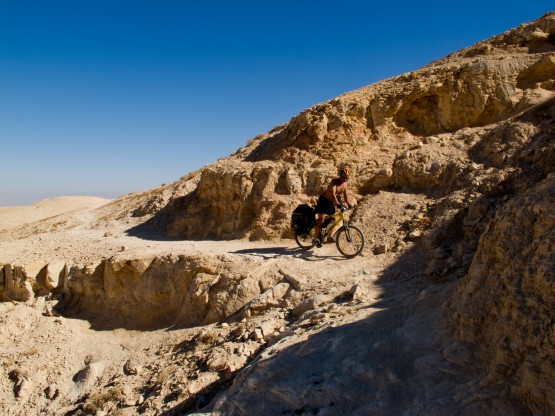
Остановился около колодца с водой, кстати, это единственный колодец с водой из всех, мимо которых мы проезжали за 4 дня. Стою у колодца жду Андрея. Мимо вверх по тропе прошел бедуинский юноша, кстати поздоровался. Отошел метров на 100 и смотрит на дно оврага, неужели, думаю, Андрей убрался в овраг?!! Нет, бедуин пошел дальше, но Андрея все нет и нет, подождал еще немного и начал подниматься обратно.
Таки Андрей действительно убрался с тропы в овраг, а там метров 10-15 примерно кувыркаться - жесть. Просто чудо, что он ничего себе не сломал. Спустились к колодцу, Андрей отмылся, количество царапин на нем уже зашкаливало, будто дикие кошки драли минут 5 Опять перекись с зеленкой, я уже начал сомневаться, что зеленки хватит, но Андрей обнадежил, что у него тоже есть, отлегло.
Комментарий Андрея
Что случилось, так и не понял. Скорость была на спуске. Был ли камень, рука ли дёрнулась…Помню, что навстречу идёт человек по тропе… Антракт!!! Высоту каньона не помню. Постарался сразу отделиться от байка. В башке мысль: чтобы переклюки и «петуха» не задело… Груженый рюкзак помог…Камни не добрались до самого основного на велe. Полежал. Подвигал неспешно частями тела. Встал. Думка: Саня, наверное ждёт. Взглянул вверх. Стоит чел, жестами спрашивает: помочь? Сказал, что всё нормально. Чел пошёл своей дорогой. Я отделил рюкзак от вела, потащил вверх. Позже вел…
Тронулись. До Сент Джорджа ехать оставалось чуть больше чем дофига, а вот светового времени явно меньше, начали торопиться. Но торопись, не торопись, а по тропинкам с крупными камнями на груженом велосипеде сильно быстро не поедешь, а местами только пешком. Зато красота кругом неописуемая.
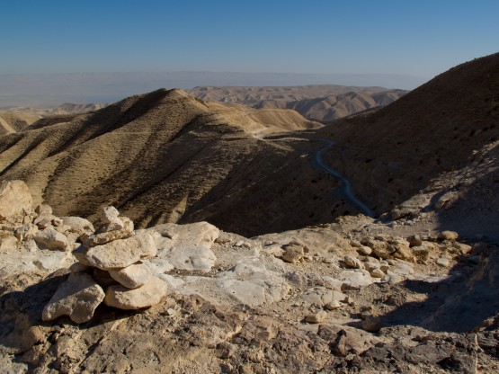
На горизонте показался Абу Муса, буквально полчаса и мы там. Что это такое я не понял. Нечто арабское, не то мечеть, не то жилое строение. Рядом обширное мусульманское кладбище. Нас интересовала в первую очередь вода. Хозяева разрешили зайти вовнутрь, где из стены торчали краны - действительно похоже на двор перед мечетью. Набрали технической воды, купили кока-колы и питьевой воды, даже малость поторговались, дабы соблюсти приличия
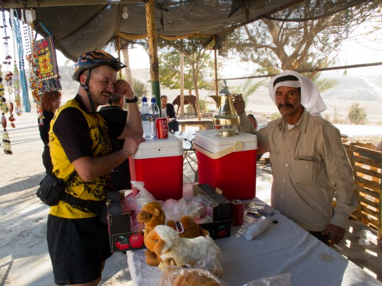
Долго рассиживаться нет времени, ехать еще прилично, правда теперь по асфальту. Немного смущает тот факт, что на этот участок пути у нас нет трека. Дело в том, что по какой-то запарке один из кусков я не залил в прибор. Выручает карта собранная Игорем Скорубским http://www.is-israel.com/maps/maps_garmin/index.htm (п.7), просто шикарная карта, на ней есть все джиповки этого и следующего дня, так что даже без трека мы ни разу не затупили. Надо было сразу поставить эту карту.
Пересекаем 1 шоссе, у Андрея спускается колесо, похоже, что под это джа-джа-джа заклеить хорошо не получилось. Андрей меняет камеру, а наши шансы попасть Сент Джордж засветло тают вместе с приближающимся к горизонту солнцем. Дело в том, что ночевать вблизи Иерихона мы не хотим, неоднократно читали предупреждения, что делать это не стоит.
Дальше, на мой взгляд, было чистое везение. Каким образом мы успели доехать грунтовками с приличным рельефом до Сент Джорджа мне не понятно, но мы успели сделать это засветло, вернее с последними лучами солнца. Монастырь поражает воображение, особенно в красных лучах закатного солнца. Хороших фотографий не получилось по причине слабого освещения, но поверьте на слово, там очень красиво.
Пока мы восхищались увиденным, из монастыря наверх поднималась женщина, которая пела очень красивым голосом, какую-то светлую песню на непонятном языке и голос ее заполнял все ущелье. Закатный свет, эта песня создавали атмосферу нереальности происходящего, незабываемый момент.
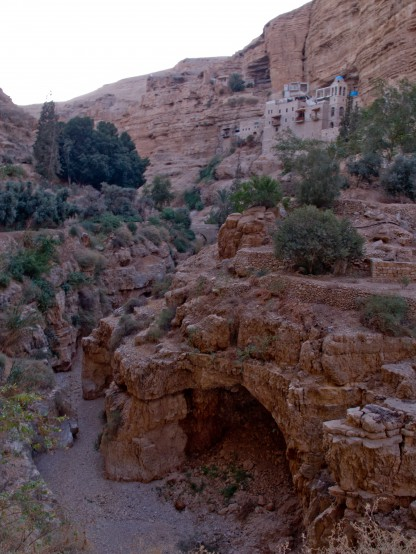
Рубильник выключили, стало темно. Если бы наш поход был длиннее, безусловно монастырю нужно посвятить минимум один день. В ущелье вполне можно найти место под палатку, но делать это нужно днем. Кстати в ущелье течет вода из родников - очень большая редкость для этих мест. Но мы не могли себе позволить здесь остаться, хотя и хотелось, так как это разрушило бы весь план похода.
Немного посидели у ручья, вскипятили чай, перекусили и вверх. Поднялись вверх на несколько сотен метров по старой дороге Иерусалим-Иерихон до 1 трассы и с ветерком спустились по шоссе до заправки Паз. Цивилизация, чистая вода в бутылках, холодное пиво, сок, бармен приколист - приятное место. Пока сидели за столиком - разглядывали огни Иордании, до которой там рукой подать, очень хотелось смотаться туда, но разум победил, как ни-будь обязательно съездим.
Комментарий Андрея
О-О-О-О!!! Спуск был крутой! Несколько километров со скоростью за 50 км/час! Что бы почаще всем встречались такие спуски! Некоторые встречные машины сигналили, мигали фарами, в общем, замечательный спуск… И в темноте огни кишлаков на склонах Иорданских гор. Круто!
Отдохнули и тронулись. Теперь наш путь лежал снова вверх. Несколько минут искали в темноте начало джиповки, по которой и начали подъем. Усталость начала давать о себе знать, остановились пофотографировать огни Иордании, отправили SMS, позвонили Дяде Вове, так как предчувствовали, что завтра связи не будет, проехали еще с километр и решили ставить палатку. План дня выполнили практически полностью, Будильник завели на 4. Завтра день не легче.
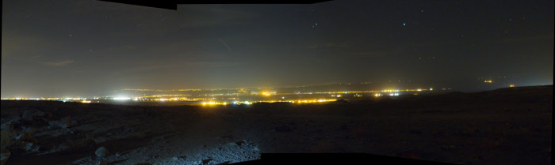
Статистика дня: Проехали: 64.4 km, за время: 16 hours, 33 minutes, 22 seconds, набор высоты: 1453 m, спуск: 2410.5 m, Трек.